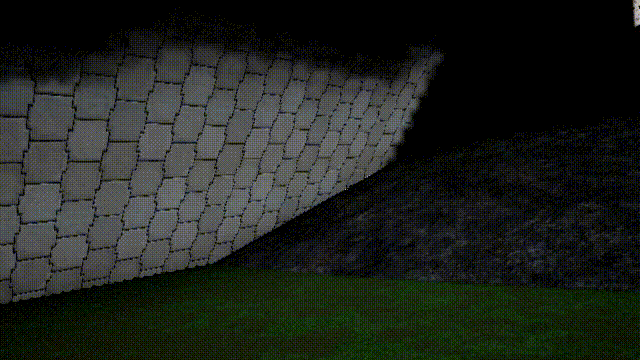
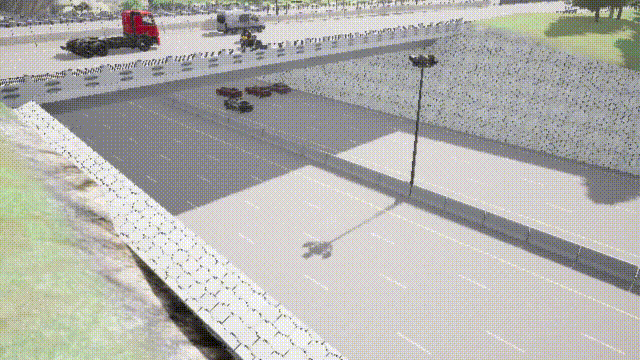
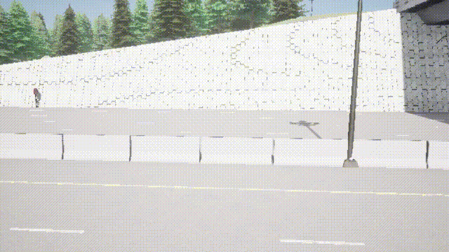
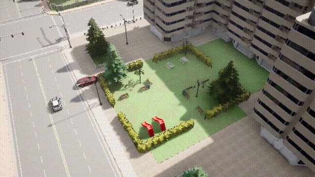
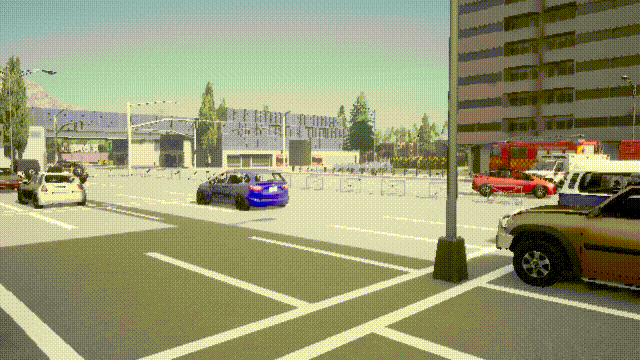
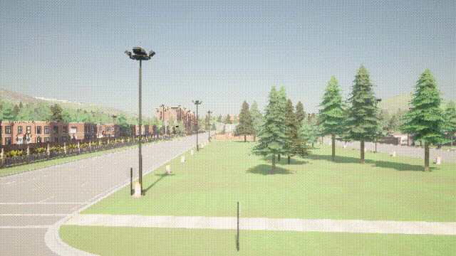
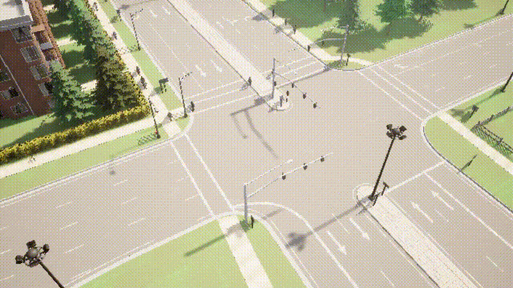
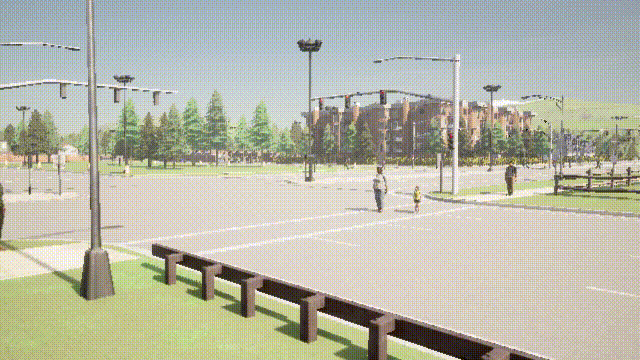

TL;DR: SIGMA addresses the limitations of current 3D reconstructors in dynamic environments by utilizing a flow-based pipeline to detect and mask moving objects while recovering occluded backgrounds via reference-guided inpainting. This modular, geometry-first approach integrates seamlessly with foundation models to deliver clean, duplicate-free static scene reconstruction in real-time.
Abstract
Static scene reconstruction is critical for robotics but remains challenging in real-world environments, where dynamic objects violate multi-view consistency and disrupt foundation models. We introduce a real-time framework that removes dynamic content prior to reconstruction to ensure clean scene recovery. By integrating geometry-driven motion segmentation with reference-guided inpainting, restoring occluded backgrounds, enabling off-the-shelf foundation models to fuse only consistent static geometry. To facilitate rigorous evaluation, we present a paired synthetic dataset of matched static and dynamic sequences. Experiments demonstrate that achieves robust, real-time static scene reconstruction across diverse scenarios.
Dataset Statistics
Statistics of the paired synthetic dataset for static scene reconstruction.
Table 2: Summary of per-town video and agent statistics.
| Each Town | Video Statistics | Agent Statistics | ||||
|---|---|---|---|---|---|---|
| #Clips | Length (s) | FPS | Pedestrians | Vehicles | Camera Movements | |
| - | 20 | 15 | 10 | 80 | 50 | 10 |
Town descriptions (horizontal layout).
| T1 | T2 | T3 | T4 | T5 | |
|---|---|---|---|---|---|
| Description | Small town by lake | Small town | Downtown urban area | Small town | Urban area |
Qualitative Results
Comparison of Static and Dynamic scene components.
| Scene | View 1 | View 2 | ||
|---|---|---|---|---|
| Static | Dynamic | Static | Dynamic | |
| City 4-1 |  |
 |
 |
 |
| City 4-2 |  |
 |  |
 |
| City 5 |  |
 |  |
 |
| City 6 |  |  |  |
 |
Citation
@article{
title={SIGMA: Static Scene Reconstruction via Inpainting and Geometry-first Motion Aggregation for Monocular RGB Videos},
author={Henry Tsui, Ethan Lai and Yu-Rou Tuan},
journal={},
year={2025}
}